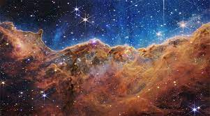

Solar System
The Solar System[c] is the gravitationally bound system of the Sun and the objects that orbit it. The largest eight objects, which form a planetary system, are, in order of distance from the Sun: four terrestrial planets, Mercury, Venus, Earth and Mars; and four giant planets which include two gas giants, Jupiter and Saturn, and two ice giants, Uranus and Neptune. The terrestrial planets, which all have a definite surface, are mostly made of rock and metal. The gas giants are mostly made of hydrogen and helium, while the ice giants are mostly made of volatile substances such as water, ammonia, and methane. The terrestrial planets are also called the inner Solar System and the giant planets the outer Solar System.
The Solar System was formed 4.6 billion years ago from the gravitational collapse of a giant interstellar molecular cloud. Over time, the cloud formed the Sun and a protoplanetary disk that gradually coalesced to form planets and other objects. That is the reason why all eight planets have an orbit that lies near the same plane. In the present day, 99.86% of the Solar System's mass is in the Sun and most of the remaining mass is contained in the planet Jupiter. Six planets and many other bodies have natural satellites or moons orbiting around them. All of the giant planets and a few smaller bodies are encircled by planetary rings, composed of ice, dust and sometimes moonlets.
There are an unknown number of smaller dwarf planets and innumerable small bodies orbiting the Sun.[d] These objects are distributed in the asteroid belt that lies between the orbits of Mars and Jupiter, the Kuiper belt, the scattered disc that lies beyond Neptune's orbit and at even further reaches of the Solar System (in which case they are classified as extreme trans-Neptunian objects). There is consensus among astronomers on the classification of the following nine objects as dwarf planets: the asteroid Ceres, the Kuiper-belt objects Pluto, Orcus, Haumea, Quaoar, and Makemake, and the scattered-disc objects Gonggong, Eris, and Sedna.[d] Many small-body populations, including comets, centaurs and interplanetary dust clouds, freely travel between the regions of the Solar System.
The solar wind, a stream of charged particles flowing outwards from the Sun, creates a bubble-like region known as the heliosphere. The heliopause is the point at which pressure from the solar wind is equal to the opposing pressure of the interstellar medium; it extends out to the edge of the scattered disc. The Oort cloud, which is thought to be the source for long-period comets, may also exist at a distance roughly a thousand times further than the heliosphere. Beyond these is the end of the Solar System. The Solar System is inside the Local Interstellar Cloud, which is part of the Local Bubble, a region of the wider Orion Arm of the Milky Way, and orbits the Galactic Center, at a distance of 27000 light years (lys). The closest star to the Solar System is Proxima Centauri at a distance of 4.25 light-years.
If you want to read more about other planets.
